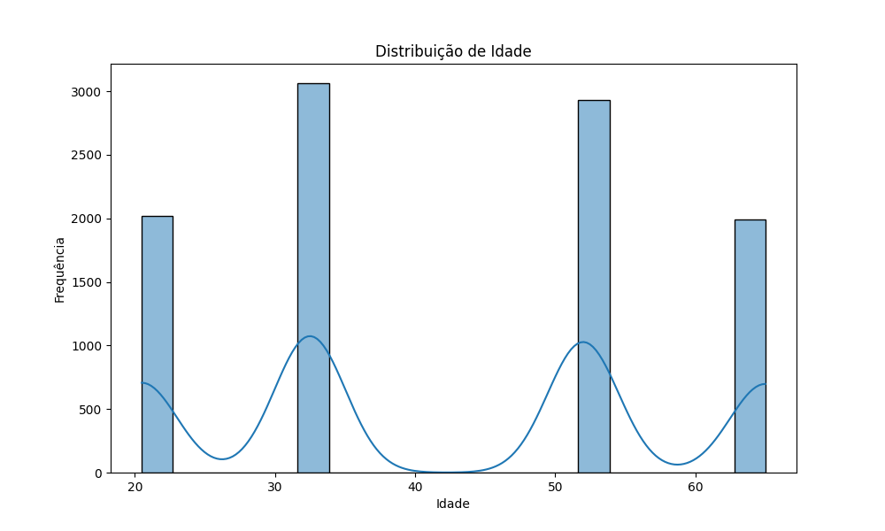
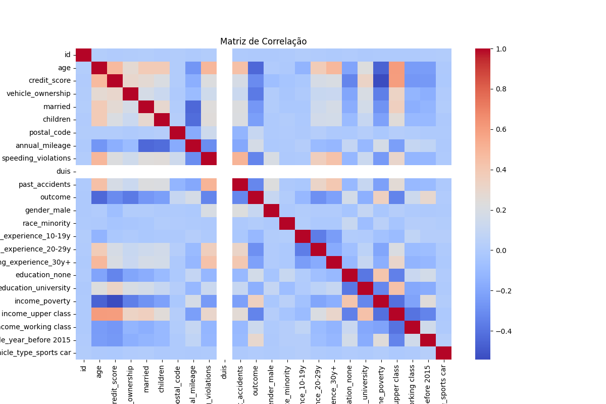
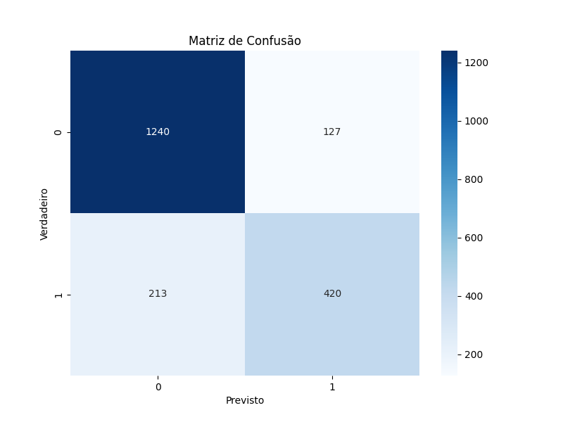

Todas as colunas do dataframe foram convertidas para lowercase para padronizar os nomes.
df.columns = df.columns.str.lower()Caracteres especiais foram removidos dos nomes das colunas para evitar problemas em futuras manipulações.
df.columns = df.columns.str.replace('[^\\w\\s]', '', regex=True)Outliers foram tratados utilizando o método IQR (Interquartile Range). Valores fora do intervalo [Q1 - 1.5*IQR, Q3 + 1.5*IQR] foram substituídos pelos limites do intervalo.
for col in df.select_dtypes(include=['float64', 'int64']).columns:
q1 = df[col].quantile(0.25)
q3 = df[col].quantile(0.75)
iqr = q3 - q1
lower_bound = q1 - 1.5 * iqr
upper_bound = q3 + 1.5 * iqr
df[col] = np.where(df[col] < lower_bound, lower_bound, df[col])
df[col] = np.where(df[col] > upper_bound, upper_bound, df[col])Valores ausentes em colunas numéricas foram preenchidos com a média da coluna, e em colunas categóricas com a moda (valor mais frequente).
for col in df.select_dtypes(include=['float64', 'int64']).columns:
df[col].fillna(df[col].mean(), inplace=True)
for col in df.select_dtypes(include=['object']).columns:
df[col].fillna(df[col].mode()[0], inplace=True)A coluna 'age' foi convertida para um formato numérico, substituindo as faixas de idade pela média da faixa. As outras colunas categóricas foram transformadas em colunas numéricas utilizando one-hot encoding.
def age_to_numeric(age):
if age == '16-25':
return 20.5
elif age == '26-39':
return 32.5
elif age == '40-64':
return 52
elif age == '65+':
return 65
else:
return np.nan
df['age'] = df['age'].apply(age_to_numeric)
categorical_cols = df.select_dtypes(include=['object']).columns
df = pd.get_dummies(df, columns=categorical_cols, drop_first=True)Foi gerado um histograma da distribuição de idade e uma matriz de correlação para entender a relação entre as variáveis.
plt.figure(figsize=(10, 6))
sns.histplot(df['age'], bins=20, kde=True)
plt.title('Distribuição de Idade')
plt.xlabel('Idade')
plt.ylabel('Frequência')
plt.savefig('age_distribution.png')
plt.figure(figsize=(12, 8))
corr_matrix = df.corr()
sns.heatmap(corr_matrix, annot=False, cmap='coolwarm')
plt.title('Matriz de Correlação')
plt.savefig('correlation_matrix.png')A coluna 'outcome' foi definida como a variável alvo (y) e as outras colunas como features (X).
X = df.drop('outcome', axis=1)
y = df['outcome']Os dados foram divididos em 80% para treinamento e 20% para teste.
X_train, X_test, y_train, y_test = train_test_split(X, y, test_size=0.2, random_state=42)Foi utilizado o algoritmo RandomForestClassifier, um modelo de ensemble que combina várias árvores de decisão para obter uma melhor performance.
model = RandomForestClassifier(n_estimators=100, random_state=42)
model.fit(X_train, y_train)Foram calculadas a acurácia, o relatório de classificação (com precisão, recall e f1-score) e a matriz de confusão para avaliar a performance do modelo.
y_pred = model.predict(X_test)
accuracy = accuracy_score(y_test, y_pred)
print(f'Acurácia: {accuracy:.2f}')
print(classification_report(y_test, y_pred))
conf_matrix = confusion_matrix(y_test, y_pred)
plt.figure(figsize=(8, 6))
sns.heatmap(conf_matrix, annot=True, fmt='d', cmap='Blues')
plt.title('Matriz de Confusão')
plt.xlabel('Previsto')
plt.ylabel('Verdadeiro')
plt.savefig('confusion_matrix.png')Apenas um modelo foi treinado, mas obteve uma acurácia de 83%, o que é um bom resultado inicial.



precision recall f1-score support
0.0 0.85 0.91 0.88 1367
1.0 0.77 0.66 0.71 633
accuracy 0.83 2000
macro avg 0.81 0.79 0.80 2000
weighted avg 0.83 0.83 0.83 2000
| ID | AGE | GENDER | RACE | DRIVING_EXPERIENCE | EDUCATION | INCOME | CREDIT_SCORE | VEHICLE_OWNERSHIP | VEHICLE_YEAR | MARRIED | CHILDREN | POSTAL_CODE | ANNUAL_MILEAGE | VEHICLE_TYPE | SPEEDING_VIOLATIONS | DUIS | PAST_ACCIDENTS | OUTCOME |
|---|---|---|---|---|---|---|---|---|---|---|---|---|---|---|---|---|---|---|
| 569520 | 65+ | female | majority | 0-9y | high school | upper class | 0.629027 | 1.0 | after 2015 | 0.0 | 1.0 | 10238 | 12000.0 | sedan | 0 | 0 | 0 | 0.0 |
| 750365 | 16-25 | male | majority | 0-9y | none | poverty | 0.357757 | 0.0 | before 2015 | 0.0 | 0.0 | 10238 | 16000.0 | sedan | 0 | 0 | 0 | 1.0 |
| 199901 | 16-25 | female | majority | 0-9y | high school | working class | 0.493146 | 1.0 | before 2015 | 0.0 | 0.0 | 10238 | 11000.0 | sedan | 0 | 0 | 0 | 0.0 |
| 478866 | 16-25 | male | majority | 0-9y | university | working class | 0.206013 | 1.0 | before 2015 | 0.0 | 1.0 | 32765 | 11000.0 | sedan | 0 | 0 | 0 | 0.0 |
| 731664 | 26-39 | male | majority | 10-19y | none | working class | 0.388366 | 1.0 | before 2015 | 0.0 | 0.0 | 32765 | 12000.0 | sedan | 2 | 0 | 1 | 1.0 |
| id | age | credit_score | vehicle_ownership | married | children | postal_code | annual_mileage | speeding_violations | duis | past_accidents | outcome | gender_male | race_minority | driving_experience_10-19y | driving_experience_20-29y | driving_experience_30y+ | education_none | education_university | income_poverty | income_upper class | income_working class | vehicle_year_before 2015 | vehicle_type_sports car |
|---|---|---|---|---|---|---|---|---|---|---|---|---|---|---|---|---|---|---|---|---|---|---|---|
| 569520.0 | 65.0 | 0.629027 | 1.0 | 0.0 | 1.0 | 10238.0 | 12000.0 | 0.0 | 0.0 | 0.0 | 0.0 | False | False | False | False | False | False | False | False | True | False | False | False |
| 750365.0 | 20.5 | 0.357757 | 0.0 | 0.0 | 0.0 | 10238.0 | 16000.0 | 0.0 | 0.0 | 0.0 | 1.0 | True | False | False | False | False | True | False | True | False | False | True | False |
| 199901.0 | 20.5 | 0.493146 | 1.0 | 0.0 | 0.0 | 10238.0 | 11000.0 | 0.0 | 0.0 | 0.0 | 0.0 | False | False | False | False | False | False | False | False | False | True | True | False |
| 478866.0 | 20.5 | 0.206013 | 1.0 | 0.0 | 1.0 | 32765.0 | 11000.0 | 0.0 | 0.0 | 0.0 | 0.0 | True | False | False | False | False | False | True | False | False | True | True | False |
| 731664.0 | 32.5 | 0.388366 | 1.0 | 0.0 | 0.0 | 32765.0 | 12000.0 | 2.0 | 0.0 | 1.0 | 1.0 | True | False | True | False | False | True | False | False | False | True | True | False |